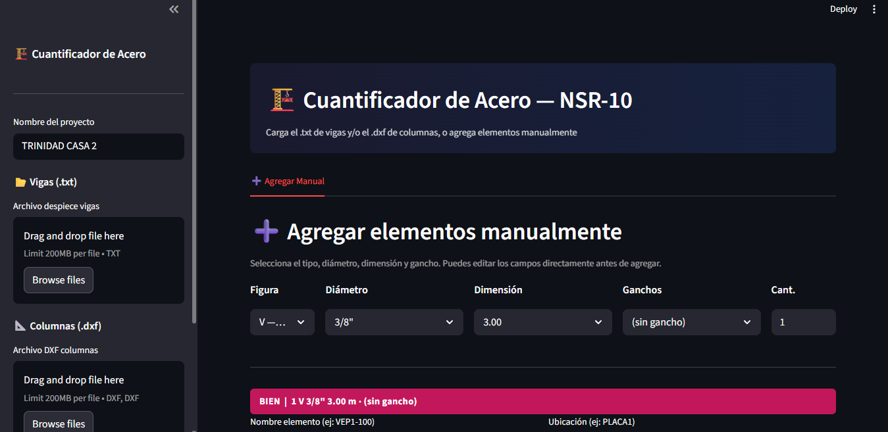
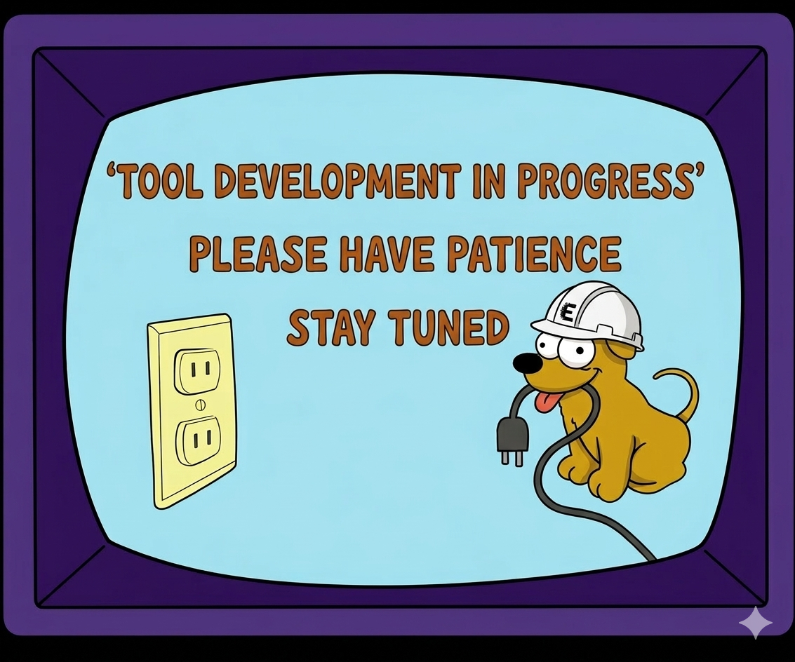
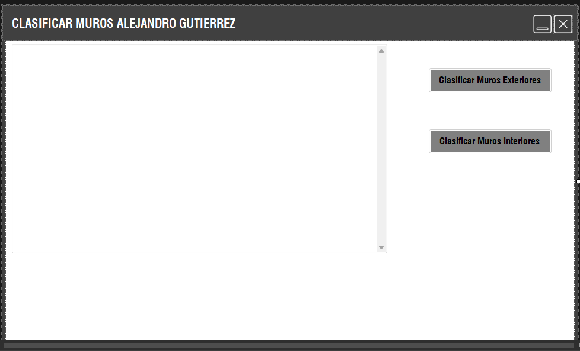

Software & Automatización
Herramientas en Python y automatizaciones BIM (Revit API) para acelerar cálculos, reducir errores y mejorar la calidad de los entregables estructurales.

Cuantificador de cantidades de acero y despiezador
Aplicación en Streamlit para cuantificar acero de refuerzo y apoyar el despiece de elementos estructurales.

Generador de espectros (NSR-10)
Aplicación en Python con interfaz gráfica para generar espectros de pseudoaceleración según municipio en Colombia.

Curvas de interacción de columnas
Herramienta para generar curvas P–M y apoyar la verificación de columnas en concreto reforzado.

Verificación geométrica de columnas
Checker rápido para validar geometría y criterios básicos antes de modelación y detalle.

Verificación geométrica de vigas
Validación preliminar de secciones y criterios geométricos para vigas antes del detalle.

Metrados automáticos
Automatización para extracción de cantidades y reportes desde modelos BIM.

Cuantificación de friso y pañete
Cuantificación automática de acabados desde el modelo BIM, lista para presupuesto.
Generador de vistas para despieces
Vistas automáticas orientadas a despieces y documentación, estandarizando entregables.
Despiece automático según NSR-10
Integración de un despiece automático de refuerzo en Revit, alineado con criterios NSR-10. Busca acelerar el detalle, mejorar consistencia y reducir errores humanos.